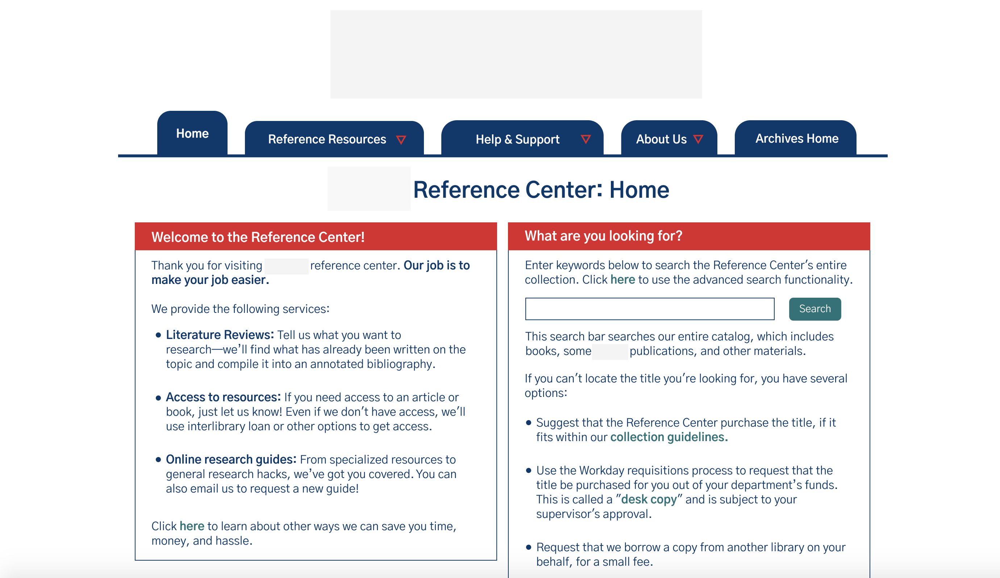

Projects
Covidopoly
This page priorities the most important aspect of the waiting room– the code. It is easy to access and click on in order to share and get friends added into the game.
We decided to add a modal with three scroll locations to the bottom half of the screen for the players arena, turn information, and players cards. This way users can change the screen functionality depending on what they currently want to see more of in that moment.
Covidopoly is an online version of Monopoly Deal with a fun twist to provide entertainment and bring friends together during the coronavirus pandemic. This is the team I worked with.
The team is working to code this following design mockup for including profile, friends, badges, and game history features to be implemented in the "my account" tab.
Puente
On the profile tab, includes basic information and results from medical and environmental evaluations given over call. On the tests tab, includes all risk analysis surveys and provides conclusion about risk levels

Because this app is going to be utilized by individuals with not too much technology exposure, we designed the features to be intuitive, not overcrowded with text, and use graphics when necessary.
Reference Center
Following the color scheme of the main AAMC site to ensure consistency between the main site and the reference center. We decided to use the same navy blue for navigational tabs but replaced orange with red.
Increasing the size of the font, decreasing the number of text blocks, and adjusting spacing will help improve the user interface. This way users can be quickly aware of what information they need to recognize and use.
Visual

When first opening the app, users are greeted with a message that explains our main purpose which is to inspire.
The main component of the app is a running total of how many days you have watched the daily video. The big progress circle easily displays this and includes badges and history to create more personalization.